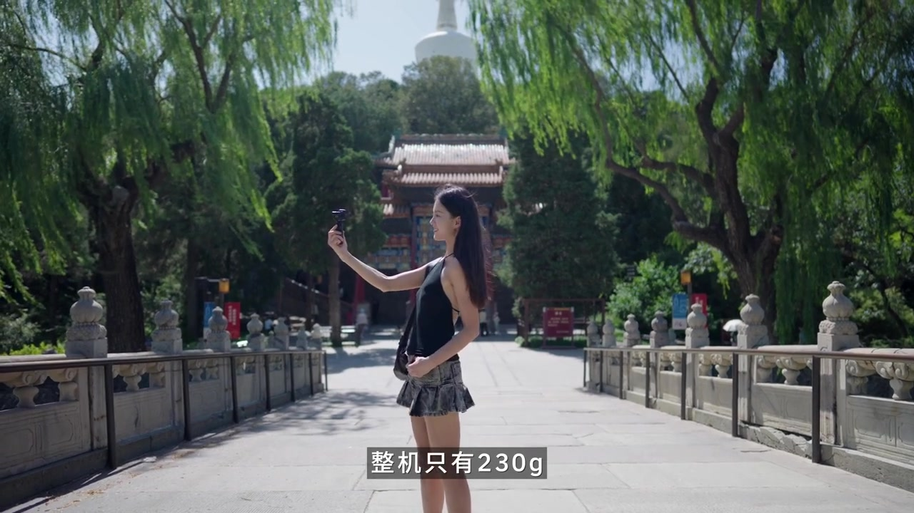
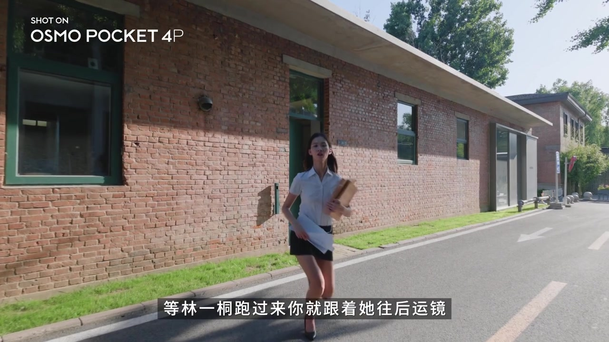
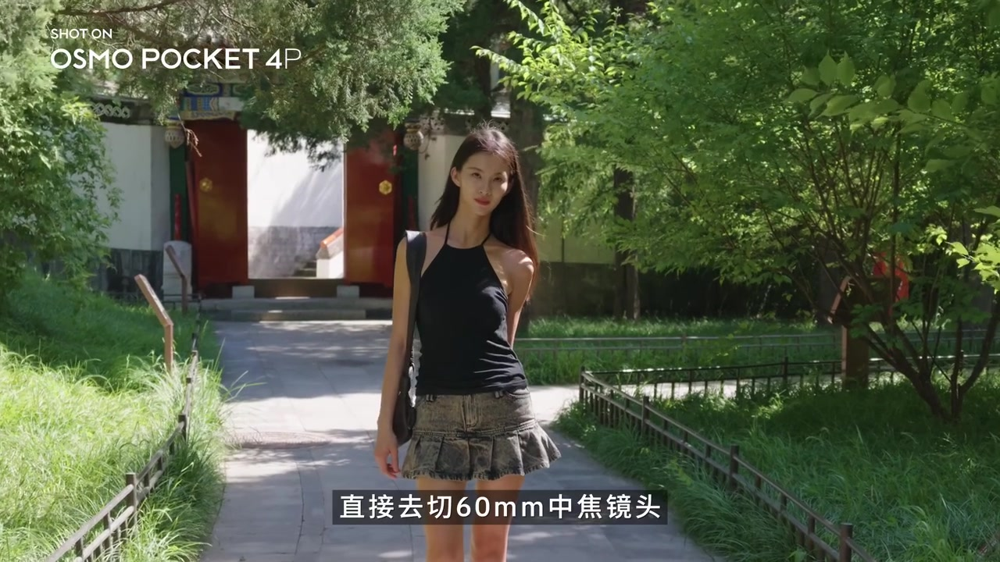
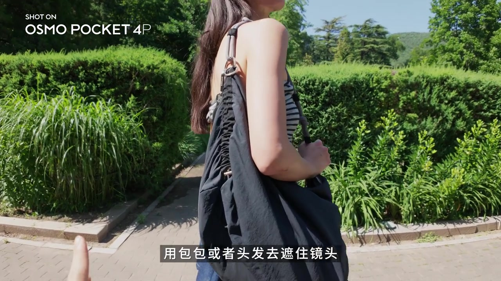
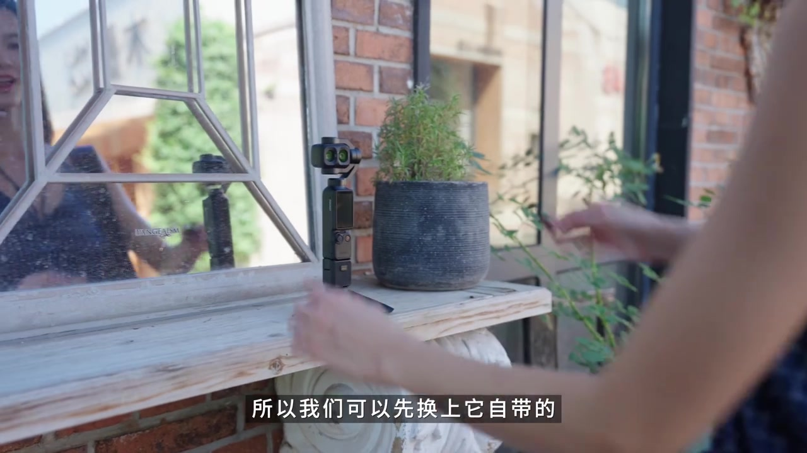
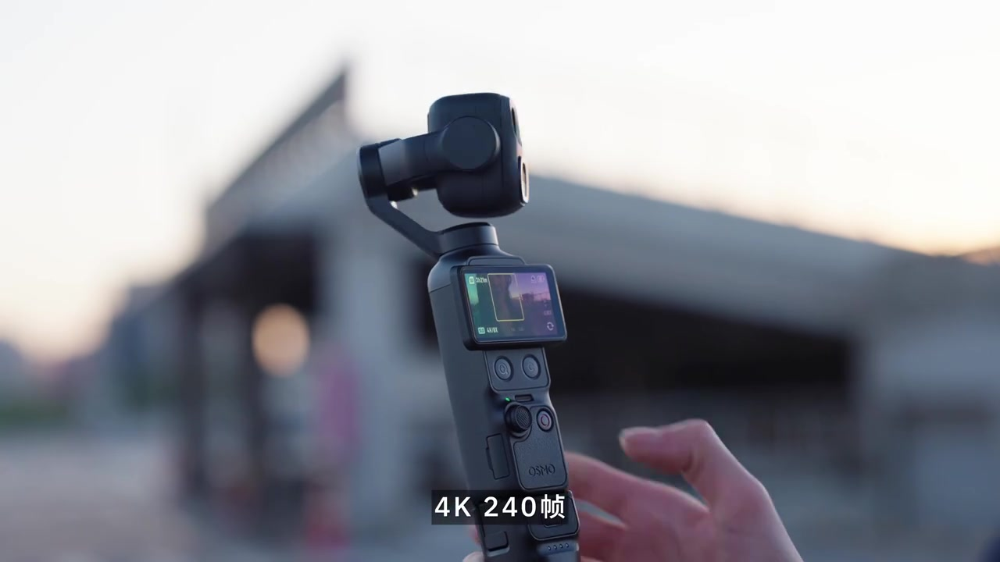
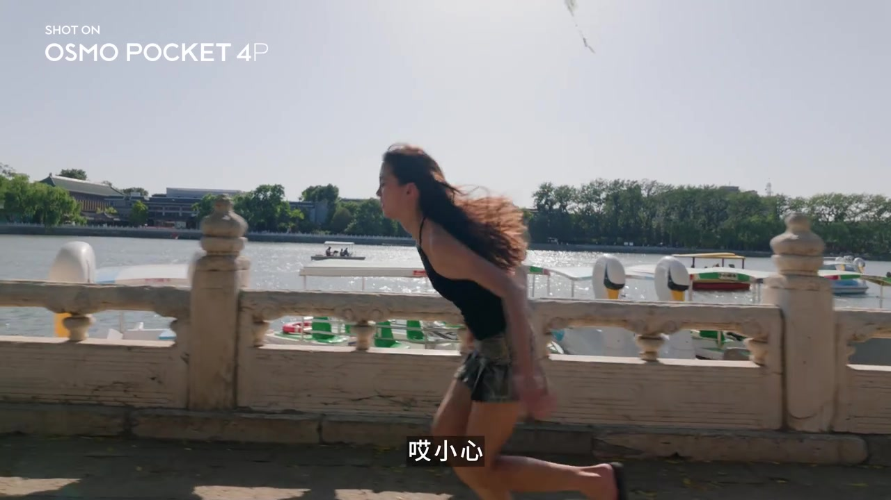
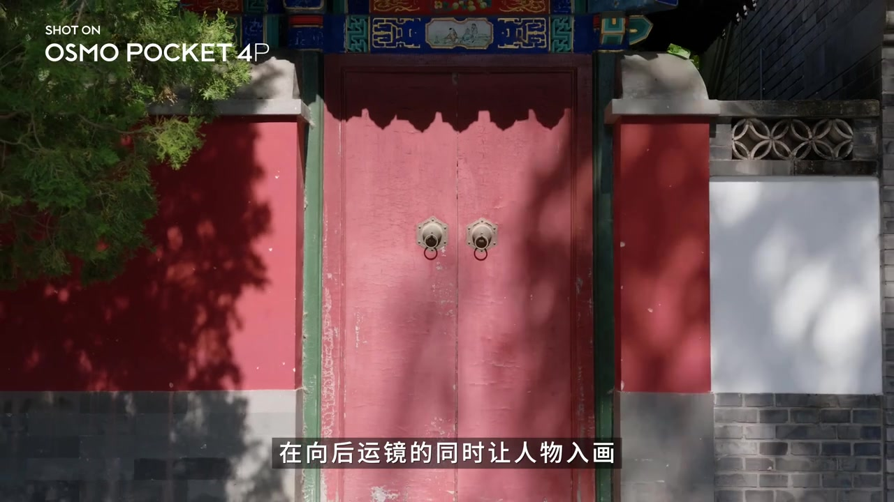

开场：外观参数刷完了，来榨干运镜转场
视频一上来就站在「刷屏式测评」的对立面：作者说，最近关于 Pocket 4P 的外观、参数、基础用法几乎都被刷遍了；但她作为「全网最会拍运镜转场」的博主（口播自认），看到这台机器眼睛都直了——整机只有 230g，能揣进口袋，还自带堪比专业稳定器的丝滑云台，简直是拍运镜转场的口袋电影机。

她对比旧工作流：以前拍运镜得扛全画幅相机再挂稳定器；今天彻底简化，全程只用一台 Pocket 4P，复刻之前拍过的爆款热门转场。
说明：作者昵称在 yt-dlp 元数据中缺失（uploader 为 NA）。Whisper 多处误识（Poke Speed→Pocket、运镜专长→运镜转场、全奥夫→全画幅、PV→FPV、低落盖→D-Log、相思动作→相似动作、六闪米→60毫米等）。叙事以可见字幕、画面水印「SHOT ON OSMO POCKET 4P」与笔记文案为准；文末转录区仍保留全部原始分段。
口播语义 [00:00–00:27]：「我知道最近你已经狠狠刷到了超多关于 Pocket 4P 的视频」「整机只有230g」「自带堪比专业稳定器的丝滑云台」「全程只用一台大疆 Pocket 4P 复刻我之前拍的爆款热门转场」。
第一种：下班转场——扔文件黑场，再用 60mm 压空间
第一种是很多人想学的「下班转场」。以前她用大设备拍，这一次全程 Pocket 4P 重做。流程很具体：随便找公司楼下，拿着「公司绝密文件」一起扔掉；先用 20mm 广角，等人跑过来就往后运镜；文件飞过来时顺势遮住镜头，做出黑场。

重点在第二段画面：想拍出绝美氛围感，直接切到 60mm 中焦。比起 20mm 广角，60mm 会带来明显的空间压缩感，拍人更有「近距离微电影」味道——她也把它说成拍好看人像的关键。

站位也有细节：一开始先和人物平行，用包包或头发遮住镜头；人物向前走时，镜头顺势转到人物身后继续跟随，再做转身一类的唯美结束动作。

口播语义 [00:27–01:24]：「这个下班转场很多人都想学」「20毫米广角」「60毫米会带来一种明显的空间压缩感」「用包包或者头发去遮住镜头」「顺势把镜头转到人物的后面继续跟随」。
第二种：敲击转场——三镜头 + 超广角冲击 + 4K240
第二种标题直接打出「敲击转场」。中间穿插小剧场台词（「你能把我整到包上来了」「快回去」「吓死我了」），然后拆解：把三个画面组合在一起，灵魂是中间那个极具视觉冲击力的超广角画面。
硬件上，先换上自带的超广角镜头配件，焦距从约 20mm 变成约 16mm。第一镜从天空摇下来再「敲」镜头；第二镜一定要设成 4K 240 帧，人物用手敲镜头后迅速后退；扔出文件后再摸镜头让画面变黑；第三镜切到最终场景，快速跑掉即可。


成片小剧场又回来：「好险啊，差点就上班了」「快给我看看成片」——把「逃离上班」的情绪和转场技巧绑在一起。
口播语义 [01:24–02:17]：「敲击转场」「三个画面组合在一起」「超广角镜头配件」「焦距从20毫米变成16毫米左右」「一定要设置成4K 240帧」「用手敲镜头然后迅速后退」。
第三种：摔倒转场——FPV 失控感 + D-Log 大光比
第三种是「摔倒转场」。作者说它太有活人感，拍出来容易「封神」；以前用大设备拍很累，现在用 P4P 轻松实现。云台先设成 FPV 模式，机头会跟着手随意摇摆——第一镜就是「哎小心」，画面一不小心撞到旁边东西上，制造失控衔接。

第二镜是重头戏：她选了最能体现旅行氛围感的镜头，并打开 P4P 的 D-Log（口播强调可记录约 17 档动态范围）——翻译成大白话，就是更接近电影机的后期调色空间，适合拍氛围感、大光比画面。随后放成片示例。
口播语义 [02:17–03:04]：「摔倒转场」「太有活人感」「云台设置成 FPV 模式」「D-Log … 17档动态范围」「非常适合去拍摄那种氛围感、大光比的画面」。
Whisper「PV模式」对照字幕/语境≈FPV；「低落盖」≈D-Log；「风神」≈封神；「大光臂」≈大光比。
第四种：相似动作转场——简单却「主角光环」
第四种是非常简单的「相似动作转场」，但作者觉得主角玩起来作用非常「出片」。建议直接用 60mm 中焦：向后运镜的同时让人物入画，等人回头看你的手势，切到下一个画面，再继续向前走即可。

口播语义 [03:04–03:18]：「非常简单的相似动作转场」「建议直接去用60毫米中焦」「在向后运镜的同时让人物入画」「等待回头看你的手，转到下一个画面」。
刚上手的小心得：双摄变焦 + 超 Q 小配件
最后补两条刚玩 P4P 的心得：一是双摄意义很大——从大约 3 倍开始变到 12 倍，这种画面放进旅行视频里很有综艺 vlog 的感觉；二是某个小配件第一次从包里拿出来就震惊，「真的好 Q」——自拍时能辅助构图，别人帮拍时也能检查角度好不好看，作者玩笑说女生肯定有人收一个。
收尾：这期是刚拿到 P4P 的快速小分享，以后会经常带着出门；喜欢的话记得三连。
口播语义 [03:18–03:50]：「它有双摄真的是一个非常大的意义」「从三倍 … 变成一个12倍」「很有那种综艺vlog的感觉」「它真的好Q啊」「刚拿了P4P的一个快速小分享」。
一路看下来
四条转场共享同一套逻辑：用遮挡/敲击/失控制造「切点」，再用焦段（20→60、超广 16mm）和帧率（4K240）放大冲击；FPV 与 D-Log 负责「活人感」和「可调色光比」。HTML 这边按时间走完流程；结构化取舍与适用边界见配套 SVG。